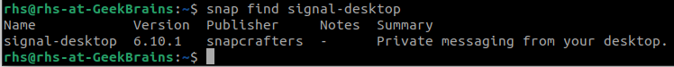

Подключить дополнительный репозиторий на выбор: Docker, Nginx, Oracle MySQL. Установить любой пакет из этого репозитория.
Будем подключать репозиторий Nginx. Всё равно у нас через два занятия по этому модулю будет "Веб-сервер на Linux", так что пригодится на будущее чтобы установить как раз веб-сервер из этого репозитория.
Смотрим есть ли уже Nginx в репозиториях нашего дистрибутива:
Есть! Версии 1.18.0-6. А может быть на сайте производителя имеется более свежая версия? Идём на сайт Nginx и видим там что стабильная версия сейчас 1.22.1 (версию mainline устанавливать не будем, хотя она и более новая, 1.23.3, но она не стабильная, а девелоперская, а мы будем устанавливать именно стабильную версию).
Озадачиваемся тем чтобы скачать версию 1.22.1, которая более новая, чем имеется в системных репозиториях. А
чтобы
постоянно вручную после не обновлять Nginx при выходе более новых версий установим репозиторий, из которого
'apt upgrade' сам будет брать обновлённые версии при необходимости.
Для этого идём в раздел сайта "документация->Установка nginx->Установка на Linux (пакеты)". Там выбираем Ubuntu и далее действуем согласно описанной там инструкции, то есть:
Установите пакеты, необходимые для подключения apt-репозитория:
Теперь нужно импортировать официальный ключ, используемый apt
для проверки подлинности пакетов. Скачайте ключ:
Проверьте, верный ли ключ был загружен:
Вывод команды должен содержать полный отпечаток ключа
573BFD6B3D8FBC641079A6ABABF5BD827BD9BF62:
pub rsa2048 2011-08-19 [SC] [expires: 2024-06-14]
573BFD6B3D8FBC641079A6ABABF5BD827BD9BF62
uid nginx signing key <signing-key@nginx.com>
Для подключения apt-репозитория для стабильной версии nginx, выполните следующую команду:
Для использования пакетов из нашего репозитория вместо распространяемых в дистрибутиве, настройте закрепление:
Всё, репозиторий Nginx с сайта производителя установлен. Сделаем 'apt update' для обновления
информации о существующих репозиториях и посмотрим какие версии Nginx стали доступны теперь:
Появилась версия 1.22.1-1. Т.к. ранее мы закрепили наш только что скаченный репозиторий и сделали
его более приоритетным чем системный (см. пункт №5 выше, было установлено значение "Pin-Priority: 900"),
то команда 'apt install nginx' установит новейшую версию Nginx именно из этого репозитория,
пропустив системный (на всякий случай зададим ключ '-f' на тот случай что если вдруг пакет nginx потребует
какие-нибудь зависимости чтобы apt их автоматичекски установил):
Nginx установлен. Проверяем запустился ли он автоматически:
Нет, автоматически не запустился (если устанавливать Nginx из родного системного репозитория он стартует автоматически, а тут вот нет, надо запускать вручную). Поэтому сначала разрешаем сервис Nginx глобально, после запускаем его и опять проверяем статус, должен показать что запущен:
Да, согласно статусу Ngix запустился. Попробуем обратиться к нему локально по адресу 'localhost':
Всё работает!
Теперь Nginx установлен из репозитория, взятого с сайта разработчика, разрешён к старту и запущен,
при следующей перезагрузке системы он будет запущен уже автоматически. А т.к. он был установлен
именно из репозитория, то команда 'apt upgrade' будет его автоматически обновлять при
появлении новых версий на сайте разработчика.
Установить и удалить deb-пакет с помощью dpkg.
Ставить будем VirtualBox. Для этого идём на сайт VirtualBox в раздел "Загрузки".
Там выбираем "Linux distributions" и копируем ссылку на "Ubuntu 22.04".
Затем идём в терминал и выкачиваем по скопированной ссылке дистрибутив VirtuaslBox при помощи
команды wget:
Затем устанавливаем только что выкаченный пакет при поможи команды dpkg
с ключём '-i':
Всё, пакет VirtualBox установился. Но при установке dpkg сказал что
возникли проблемы в виде неудовлетворённых зависимостей. Исправляем это посредством
запуска команды 'apt -f install':
...
Пробуем запустить только что установленный VirtualBox:
Всё работает. Удаляем установленный VirtualBox через 'apt purge':
и после делаем 'apt autoremove' для удаления более ненужных зависимостей:
Установить и удалить snap-пакет.
Есть такой мессенджер, называется Signal. В принципе как Telegram, как WhatsApp, только не такой распространённый. Позиционируется как один из наиболее защищённых мессенджеров в текущее время. Он существует в виде snap-пакета.
Попробуем его установить:
Установлено. Тепернь посмотрим запускается ли он:
Запускается. Теперь удаляем этот snap-пакет:
А так же посмотрим есть ли какие сохранённые данные для этого пакета и если таковые имеются,
то удалим и их (аналог 'apt purge'):
Всё. Snap-пакет Signal удалён и все его возможные данные (например конфигурация) тоже удалены.
Добавить задачу для выполнения каждые 3 минуты (создание директории, запись в файл).
Запускаем команду 'crontab -e' для редактирования crontab для текущего пользователя:
и вносим запись cron чтобы он срабатывал каждые три минуты, записывая текущую дату/время в файл
current_date.txt в домашней директории пользователя:
Смотрим содержимое домашней директории через ls до тех пор, пока там не
появится файл current_date.txt и выводим его на экран. Затем
удаляем более ненужную запись в crontab, выполнив команду 'crontab -r'.
После проверяем очередь заданий cron через 'crontab -r' и убеждаемся
что она пуста:
Подключить PPA-репозиторий на выбор. Установить из него пакет. Удалить PPA из системы.
Честно говоря просто не нашёл ни одного толкового пакета из PPA который можно было было установить и после удалить. А повторять то, что мы на семинаре уже делали (устанавливать PHP из PPA репозитория Ondřej Surý) не хочу -- зачем повторять то, что мы уже на семинаре сделали?
Так что пусть это задание останется нерешённым (нет, я мог бы его решить если бы нашёл хоть что-то, что достойно установки). Тем более всё рано это задание необязательное ;-) Так что перехожу к следжующему, тоже необязательному заданию.
Создать задачу резервного копирования (tar) домашнего каталога пользователя. Реализовать с использованием пользовательских crontab-файлов.
crontab для пользователя создаём точно так же как было написано выше в "Задание №4",
только указываем другое время и в качестве команды указываем tar
с необходимыми ключами:
Ключи имеют следующие значения:
Опция 'v' (вывод на экран прогресса упаковки) тут не нужна, всё равно задания crontab мы не видим.
Указана конкретная маска пакуемых файлов ('.*') чтобы паковались не просто все файлы что происходит по-умолчанию, но и скрытые, которые начинаются с символа "точка".
Т.к. создание архива происходит в той же самой директории, которая запаковывается,
указан ключ '--exclude' с именем архива чтобы tar исключил из процесса
запаковки сам архив и не вошёл в рекурсию, пакуя сам себя.
Создание архива будет происходить еженедельно каждое воскресенье.